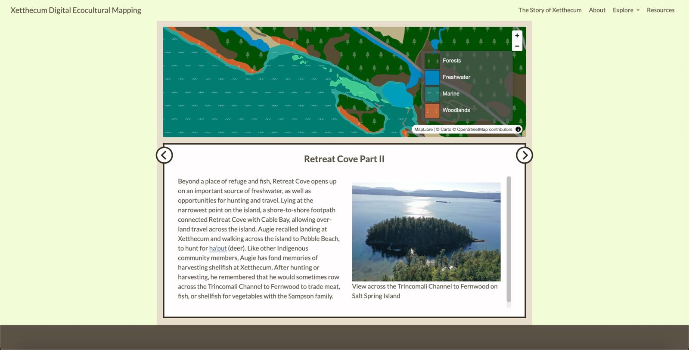

Design and Implementation
Centering stories of place
A priority for the Phase III development of the ecocultural mapping framework was to incorporate more of the language and cultural content that had been gathered through interviews with Puneluxutth’ elders and knowledge holders.
It became clear that our prototype needed to take a narrative approach in order to incorporate these stories of place. In reworking the design of the prototype, it was important that the story would not be secondary or decorative, rather it needed to be woven into the resource in a way that reflects its important cultural role in sharing and understanding Indigenous knowledge.
The Transboundary Gathering
The gathering held in Strait Salish territories (A Transboundary Gathering: Ecocultural Mapping in the Salish Sea, August 2023) further highlighted the need to incorporate stories of place as well as the connection of story to place-based learning.
This gathering, attended by several Xetthecum team members and supported by a SSHRC Connections Grant, provided a forum for showcasing the prototype produced during Phase II, and discussing issues of data sovereignty and cultural safety in the context of ecocultural mapping. Social learning circles and design clinics (led by the Western Washington University Center for Community Learning) provided a structure for these discussions.
In addition to providing an opportunity for essential relationship building and the creation of collaborative connections, the gathering allowed the design team to gather feedback about the tool and to understand it in the larger context of the Salish Sea region.
Discussions included issues of cultural sensitivity and how to design data sovereignty into the tool such that sensitive and sacred cultural knowledge could remain private and other knowledge be made public, as determined by Indigenous elders and knowledge keepers.
A scrollytelling story map
With the newly directed emphasis on storytelling, the team began to collaboratively design a narrative-based mapping framework that would create a foundation for weaving ecological science into an overarching narrative shaped by Indigenous knowledge.
We initially decided to take a “scrolly-telling” design approach (see examples here and here) and use this as a foundation for incorporating the biodiversity data included in the original prototype within a narrative framework. Antranig Basman and Andrew Simon had developed a scrollytelling framework for other similar projects and we felt this framework would meet our needs and provide a basis for the Xetthecum story map.
The team then met regularly over the next few months to collaboratively develop the storyboard, pulling in interview content, themes identified in the interviews, biodiversity data, images, videos and more, with the aim of creating an engaging, cohesive and compelling story of Xetthecum.
Welcoming a broad audience
Over the course of Phase II and into Phase III of the project, the team had many discussions about how to make the ecocultural storymap more engaging and welcoming to a broad audience.
Given the large amount of information we had gathered, as well as the unique interactive approach of the framework, we were concerned that landing on the interactive map for the first time could be overwhelming and confusing for many.
In addition to the creation of a how-to tutorial (part of our next steps), the design team worked on an interactive onboarding sequence rooted in the symbolism of the Coast Salish spindle whorl (see Figma prototype here and screen capture here), which aimed at providing a creative and engaging introduction to the story map and its content.

Figure 4. Story Map visualizations created during Phase III of the Xetthecum pilot project, framed in the website portal which offers multiple approaches to exploring content.
A portal into the story map
In order to improve the accessibility of the storymap, we sought to provide a diversity of entry points, including the ability to begin at a simple starting point and then dive into deeper layers of interaction and information. This approach would provide the basis for a non-linear narrative experience through hyper-linking (see Next Steps).
The educators on the team also felt that this way of organising the data would be particularly useful in a formal educational setting, where teachers and students could directly access biodiversity data as well as stories of place.
Thus, the design focus shifted from the onboarding welcome sequence to the creation of a “portal” into the story map, which took the form of the Xetthecum Ecocultural Mapping website. This website allows visitors to learn about the project aim and background, and to directly access biodiversity data and stories of place as well as the story map itself (Figure 4).
An evolving framework
In developing the ecocultural mapping framework (latest version here) we considered a number of different approaches and designs towards creating an accessible and inclusive experience for a broad audience.
We acknowledge that one version of the framework is inadequate and that having a flexible framework that welcomes community contributions and that can be adapted to different needs, purposes and contexts is essential in the longer term.
Next steps in the design of the framework will be to gather more community input through a community event being planned on Galiano Island in the Fall of 2024.
Our aim has been to build a framework that is itself a scaffold to support further story gathering, which we can continue to elaborate in the longer term.
This framework is not an end unto itself, but an ongoing collaborative process, and this documentation shares our learning journey along the way. We hope that sharing this journey will support others in adapting this ecocultural mapping framework in a way that is appropriate for their location and context.
Table 17 describes the tasks undertaken in the design and implementation of our ecocultural storymap.
Table 17. Ecocultural Mapping Design and Development Tasks
| Task | Start | End |
|---|---|---|
| Community design consultation for storymap onboarding interactive sequence | March 2023 | August 2023 |
| Transboundary Gathering - organising meetings | Sept 2022 | July 2023 |
| Transboundary Gathering in Strait Salish territories | August 2023 | August 2023 |
| Storyboard framework design and development | August 2023 | April 2024 |
| Incorporate interview content and cultural values into story map | October 2023 | ongoing |
| Storyboard framework design refinement | January 2024 | ongoing |
| Design and implement Ecocultural Mapping website/portal | January 2024 | April 2024 |
| Gather with Indigenous knowledge holders from Pune’luxutth to reflect on the story map design and content, identify gaps where we might learn more | February 2024 | February 2024 |